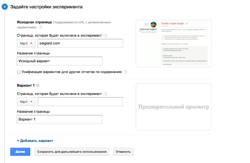
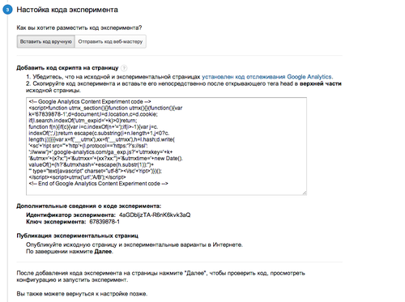
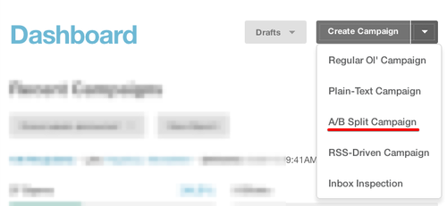
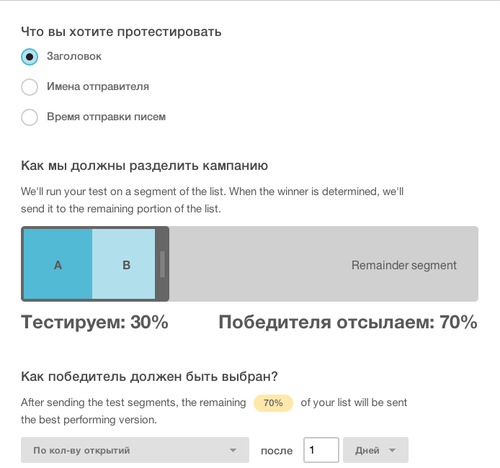

A/B тестирование с помощью Google Analytics и Mailchimp
A/B тест — метод веб-оптимизации, этот метод используют для того чтобы
узнать, какой вариант веб-страницы лучше всего конвертирует трафик в
действия.
Пользователям поочередно в равных пропорциях показываются 2 страницы,
которые различаются лишь одним элементом: страница А и страница В. По
прошествии определенного времени или достижении определенного число
показов, сравниваются желаемые результаты: переходы на целевые страницы,
клики на призывы к действию и другие параметры, которые должны быть
определены до начала тестирования.
Таким способом определяется наиболее подходящий вариант страницы.
Первое, что нужно сделать при планировании A/B тестирования — это
выяснить, что именно вы хотите проверить.
Тестирование сайта
Существует много вещей которые можно протестировать на вашем сайте для
увеличения его эффективности:
Структура сайта — колонка, две колонки, сайдбар слева
или справа, варианты оформления страницы или блоков сайта.
Заголовок — заголовок привлекает внимание посетителей и
заставляет их начать чтение основного текста. Тестирование различных
формулировок, так же как и тестирование различных вариантов размеров
шрифта заголовка, позволяет выбрать лучший вариант.
Текст призыва к действию — текстовая формулировка
вашего призыва к действию, которая влияет на конвертацию посетителей в
клиентов, например кнопка «Посмотрите тарифы и цены» с вариантами
«Бесплатная пробная версия» и «Зарегистрируйтесь для доступа к
бесплатной пробной версии».
Расположение призыва к действию — тестируйте несколько
различных расположений этого блока на странице (выше основного текста
страницы, рядом с ним, ниже или внутри него).
Оформление призыва к действию — проверяйте оформление
этого блока, цвет, фон, размер, ссылка это или кнопка.
Длина и стиль текста — очень важно понять, какого
размера текст согласны читать ваши посетители. Экспериментируйте со
списками, длиной абзацев и количеством заголовков.
Соответствующие изображения — кроме вариантов
изображений, ищите оптимальное количество, наилучшее расположение и
самый удачный размер изображений.
Различные предложения — можно проверять различные
торговые предложения, меняя цену, бесплатные дополнительные плюшки,
бесплатную доставку и т.д.
Например, для начала работы с сайтом, подсчитайте и запишите, сколько
человек переходит с главной страницы сайта на страницу заказа.
Используйте для этого статистику от GA или Я.Метрику. После этого
выделите влияющие на принятие решения элементы, которые вы хотите
протестировать.
Тестирование email-рассылок
Для email-рассылок можно проверять:
Текст призыва к действию («Купить сейчас» вместо
«Смотрите тарифы и цены»)
Оформление и расположение призыва к действию, как
описано выше
Тема письма («Распродажа товара АБВ» вместо «Скидки на
товар АБВ»)
Включить отзывы в текст письма (или не включить)
Структура письма (одна или две колонки, размещение
различных элементов письма по разному)
Персонализация («Уважаемый Сергей Иванович» вместо
«Сергей»)
Заголовок, как описано выше
Длина и стиль текста, как описано выше
Изображения, как описано выше
Различные предложения, как описано выше
На начальном этапе целью A/B тестирования рассылок может служить просто
увеличение количества открытий писем, т.е. работа с заголовком. После
отработки навыка составления заголовков, можно приступать к повышению
CTR.
Советы по тестированию
Обычно при A/B тестировании проверяется один пункт из списка выше за раз,
поэтому нужно составить список тестируемых элементов и определите
стратегию их тестирования. Также нужно иметь начальные показатели, на
которые вы будете ориентироваться, что особенно важно в том случае, если
вы не собираетесь использовать свой существующий дизайн, как контрольную
точку.
Тестируйте как можно раньше и чаще: ваш сайт должен
быть оптимизирован так скоро, как только это возможно. Таким образом вы
снижаете возможный уровень недополученного с сайта дохода.
Всегда тестируйте одновременно: проведение тестирование
двух вариантов в одно и то же время жизненно необходимо для
предотвращения искажения результатов с течением времени.
Проводите тесты только на новых пользователях: не
используйте существующих клиентов в качестве подопытных кроликов при
тестировании сайта. Их предвзятое мнение может исказить результаты и
привести к неточностям.
Прислушивайтесь к результатам тестирования: не
поддавайтесь искушению прислушиваться к своим инстинктам или чьим-то
советам, если статистика данных говорит вам обратное.
Отведите для тестирования достаточно времени:
прекращение тестирования раньше времени означает, что есть вероятность
ошибки в его результатах больше. То же самое можно сказать и в случае
его слишком долгой работы. Как минимум необходимо несколько сотен
тестовых результатов, прежде чем делать какие-либо выводы, но желательно
несколько тысяч.
Проводите тестирование на всем сайте: в случаях, если
вы проверяете призыв к действию или заголовок, который появляется более
чем на одной странице, убедитесь что вы проверяете эти элементы на
каждой странице.
Убедитесь что вернувшиеся посетители увидят тот же самый
вариант: не нужно посетителям, которые увидели при первом посещении сайта
вариант A,отображать вариант B при их повторном визите. Убедитесь, что у
вас есть возможность показывать таким посетителя ту же страницу до
завершения теста.
A/Б тестирование сайта с помощью Google Analytics за семь шагов.
Чтобы создать эксперимент, нужно соблюсти еще три важных условия:
Как вы, вероятно, знаете, A/B тестирование предназначено для проверки
разных версий контента. Для проведения тестирования вы должны
определить критичную страницу в вашей воронке конверсии
или неэффективную целевую страницу, которую вам нужно протестировать.
После выбора объекта тестирования (так называемой страницы «А»), вам
нужно построить гипотезу для проверки. Например,
увеличится ли количество посетителей, совершивших покупку, если вы
перенесете на эту страницу расчет стоимости доставки?
После того, как вы сформировали гипотезу, как совершить конверсию, вам
понадобится
создать новый дизайн или функционал страницы «Б»,
которая будет соответствовать вашим идеям.
После того, как вы выполните все предпосылки
Заходите в интерфейс
Google Analytics в Содержание > Эксперименты и
вводите адрес страницы, которую вы хотите улучшить.
Настройте эксперимент и выберите или
создайте цель (конечную страницу, например).
Настройте параметры: укажите
ссылки на все варианты тестируемой страницы. 
Добавьте на страницы эксперимента
сгенерированный системой код, и с помощью GA убедитесь
в том, что все элементы находятся на своем месте. 
Запускайте эксперимент. После старта, следуя настройкам,
GA сам начнет перенаправлять пользователей на различные страницы
эксперимента, отслеживая достижение цели, установленным вами в предыдущих
шагах.
Как только система накопит достаточно данных для того, чтобы определить,
какая из страниц более эффективна, она выдаст вам результат.
A/Б тестирование email-рассылки с помощью Mailchimp.
К сожалению, Mailchimp позволяет проводить тестирование только по
заголовку, отправителю и времени отправки.
Чтобы экспериментировать с содержанием писем, надо искать другую площадку,
но мы используем MailChimp, поэтому рассмотрим работу с ним.
Создайте кампанию из меню в правом верхнем углу

На первой странице мастера кампании предоставлены все настройки A/Б
тестирования. Основные моменты я перевел на русский.

Обратите внимание на возможность задать процент аудитории, на которой
будет проводится тестирование. Вариант, победивший в тестировании, будет
отправлен остальным подписчикам.
Победитель может быть выбран по количеству открытий письма, по количеству
переходов на сайт из письма и вручную.
Также можно указать лимит времени, в течение которого будут проводиться
подсчеты.
Дальнейшие экраны представляют собой стандартные экраны настройки рассылки
MailChimp, поэтому мы на них останавливаться не будем.